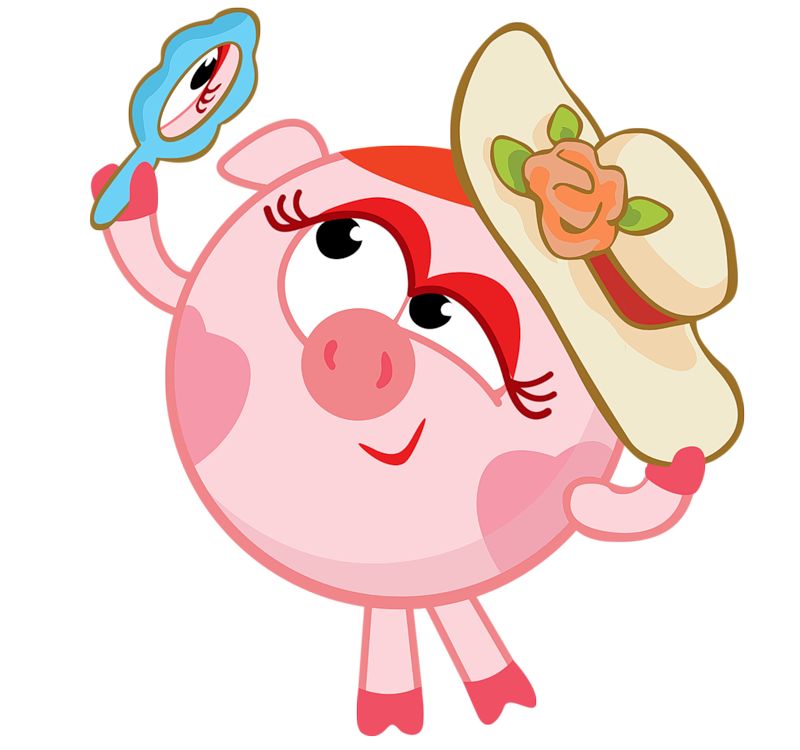
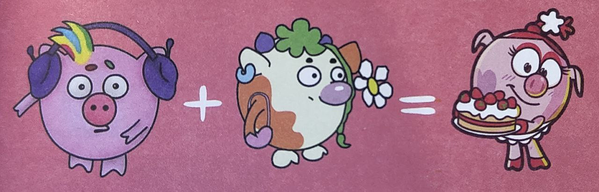
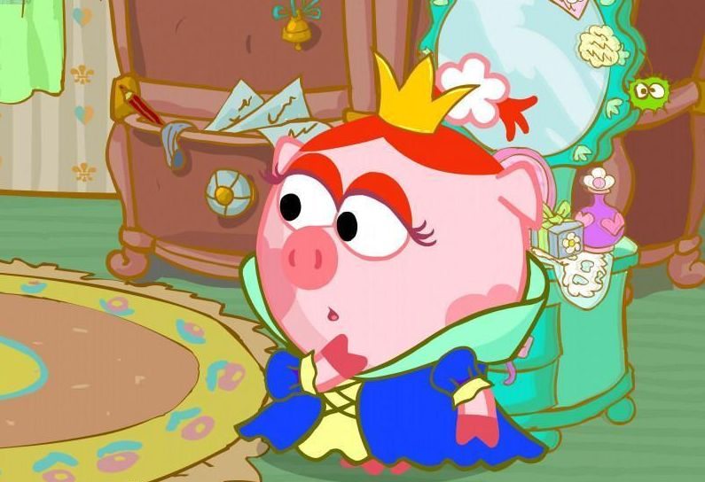
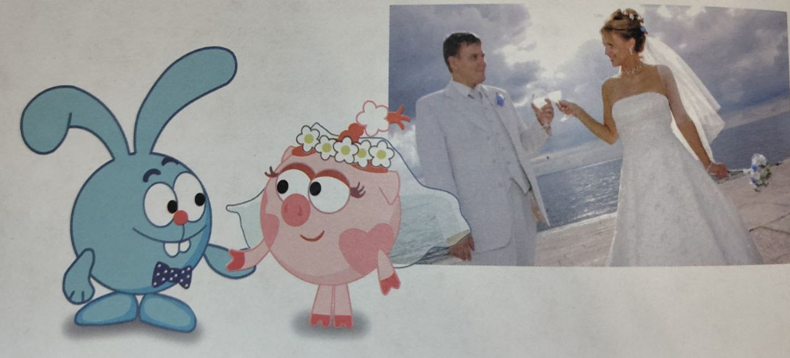

Образ очаровательной Нюши отсылает сразу к двум персонажам эпохи «Сластён». Один, вернее, одна из них, Бурёнка, девушка с мягким характером и склонностью кормить друзей борщом и блинами. Второй поросенок Диджей Робкий. Чуть глуховат, слегка аутичен, всё время в наушниках - диджей же!

Мы решили оставить милую Бурёнку, но нужно было как-то её растормошить, рассказывает режиссёр Денис Чернов. – сделать конфликтнее. А какой характер самый вздорный? Свинский!
Так появилась Нюша с трогательными сердечками на боках и характером настолько свинским, сколько в состоянии выдержать Ромашковая долина. В одной из серий её именем даже назвали ураган.

Главное хобби Нюши связано с модой: она шьет различные наряды, плетет макраме, а также скупает все новые наряды и очень печалится, когда те выходят из моды. Но кроме того, Нюша очень хорошо пишет стихи. Она была так увлечена этим делом, что Бараш не мог её никак отвлечь. Нюша хороший вратарь, когда смешарики играют в футбол и хоккей, ворота становятся её зоной.
Помимо этого Нюша хорошо разбирается в технике, в серии «Библиотека» она собрала ветрогенератор. Также свинка вместе с Барашем смогла построить маяк («Большие планы»).
По сети много лет ходит видео со свадьбой Кроша и Нюш Оно обросло слухами и домыслами в попытках связать его с основным сюжетом. Что же оно означает на самом деле?

В 2004 году Илья Попов, генеральный продюсер и один из со здателей «Смешариков», играл свадьбу. Событие масштабное. знаковое. В команде задумались: что подарить? Чайный сер виз? Скороварку? Кирпич «в фундамент ячейки общества»?
-Мы всё-таки создатели анимационного бренда, припоми нает Надежда Кузнецова. Было бы логично сделать, пода рок в мультяшном духе. Я пошла к ребятам в студии. Времени мало, хорошие идеи обычно возникают в последний момент Лёша Минченок принял затею в работу.
Мультфильм получился всего на 30 секунд. Крош в галс туке-бабочке ведёт за руку невесту Нюшу. Ежик приносит кольца. Кролику окольцовывают ухо, а на свинке обручаль ный предмет защёлкивается со звуком наручников. Все ра дуются! В конце экран заполоняет толпа мини-Крошей. Вид но, для кроликов год выдался урожайный!
Характер Нюши масштабен настолько, что сама Вселенная не прочь стать её подружкой. В серии «Диета для Вселенной» они на пару решают сбросить немного массы и перестать наконец расширяться. Мироздание чуть было не схлопывается. Вот каков размах Нюшиного влияния!